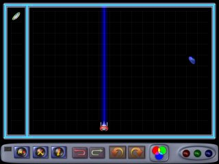
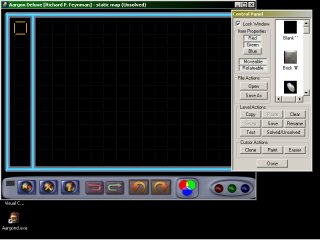
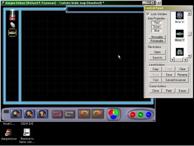
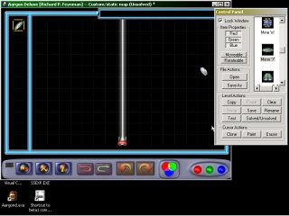
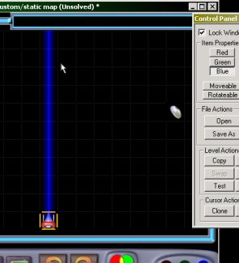
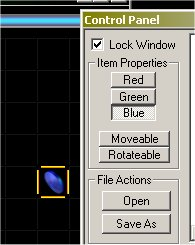
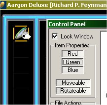
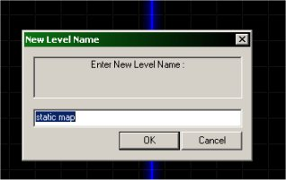

Creating and Testing and Saving a simple level
In this section, we will create the simple level shown below using the commands described above. Don't forget to select the Custom level set from the level pack select screen!

We start by enabling the editor and then, selecting a level from one of the level sets. Your screen should look like this:

Next, we will insert a Laser (source), a Coin and a mirror by double clicking these items in the Editor Control Panel's item list. Your screen should look like this:

Next we place the pieces where we want them by dragging them with the mouse.:

Next, we wish to change the color of the laser beam to blue. We do this by selecting the laser in the map (click once) and then Turning off the Red and Green properties from the Editor Control Panel:

Next, we repeat the above step for the coin, making it a Blue coin.

Now, even though what we have looks exactly like what we wanted to end up with, there is still one more step that has to be performed before the level can be played. And that is, to make the mirror Moveable AND Rotateable. We do this by selecting the mirror and turning on the Moveable and Rotateable properties for this piece. You will notice that once this is done, the cursor will appear differently when it is placed over the mirror (it will look like a hand).

We should give our level a name. We do this by selecting: Rename from the control panel:

We now wish to test our level to see that it behaves the way we expected it to. Pressing the Test button on the control panel allows us try out the level. When we are done testing, we press ESCAPE to re-enable the editor.
Now that everything seems to be working properly, we save the level by pressing Save on the control panel.